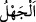
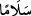

Bir hadîste şöyle buyrulmuştur: “Mü’minler burnu ağrıyan deve gibi ağır başlı ve
yumuşak huyludur. Yularından çekilse gider, bir kaya üzerine çöktürülse çöker.”[247]
Şeyh Sa‘dî der ki:
Makbul ve akıllı olan mütevazı olur
Meyveli ağaç dalını yere doğru eğer
Sel, heybetle aktığı için
Yukarıdan aşağı tepetaklak düşer
Çiy damlası âciz ve küçücük olduğu için
Gökyüzü onu sevgiyle Ayyuka çıkarır
“ve kendini bilmez kimseler onlara laf attığında” sefihler onların yüzüne karşı
çirkin sözler söyledikleri zaman “(incitmeksizin) “Selâm!” yani, el-Müfredât’ta
belirtildiği üzere biz sizden selâmet/kurtulma istiyoruz; İhyâu’l-ulûm’da geçtiği üzere
biz sizin günahınızdan selâmette olduk/olalım, siz de bizim şerrimizden selâmette
oldunuz/olun “derler (geçerler)”
“ kişinin ilimden yoksun olması, bir şeyin mâhiyetinin aksine inanmak, ister
doğru ister yanlış olarak inansın bir şeyi hak ettiğinin/gerekenin aksine yapmaktır. Tıpkı
kasden namazı terk etmek gibi. Şu âyet bu mânâya göredir. (Kavmi, Mûsâ (a.s.)’a: “Sen
bizimle alay mı ediyorsun?” dediler. O da: “cahillerden olmaktan Allah’a
sığınırım.” dedi.” (el-Bakara, 2/67). Mûsâ (a.s.) alay etme fiilini cahillik saymıştır.
Bazıları, “ lafzının “kurtulma, selâmet bulma” fiilinin yerinde kullanılan mahzuf
bir fiilin mastarı olduğunu söylemiştir. Yâni biz sizden selâmet bulduk, kurtulduk;
sizinle cahilce davranışlarda bulunmayız, sizin herhangi bir işinize karışmayız. Bu bir
cahilliktir ve aklın hafifliğine dayanan davranıştır. Bizimle sizin aranızda iyilik de
kötülük de yoktur. Sadece mütâreke/ birbirine eziyet vermekten vazgeçmek vardır.
Müfessirlerin çoğu “Selâm” lafzının onların ifâdelerinin aynısı değil de, mahzuf bir
masdarın sıfatı olduğunu söylemişlerdir. Yâni onlara eziyetten ve günahtan selâmette
olacakları düzgün bir söz söylerler, demektir. Maksad sefihlere ilişmeyi terk etmek ve
onlarla konuşmaktan ve tartışmaktan yüz çevirmektir.
Muhakkık Rumî der ki:
Eğer sana riyakâr ve hilekâr deseler;
“Dediğiniz gibiyim, hattâ iki yüz kat daha fazlası” de ve çek git
Eğer öfkeden sana küfreder, sövüp sayarsa;
Ona duâ et, gönül hoşluğuyla çek git
Şeyh Sa‘dî (k.s.) der ki
Bir sarhoşun koltuğunda bir kopuz vardı